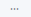
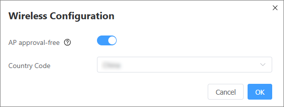
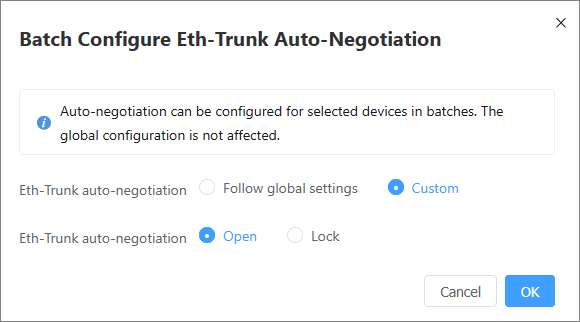

Device Management
Context
In the device list, you can view information about existing devices on the entire network. In the to-be-approved device list, you can view unapproved devices on the network and perform operations such as approval and device replacement.
Procedure
- Choose . The Device Management page is displayed, as shown in Figure 1.

- In the Device Name column, the device marked with Local is the device that you have logged in to, and the device marked with Stack is a stack device on the entire network.
- In the Device Model column, the device marked with Master is the master device, the device marked with WAC is the WAC (native or standalone WAC) on the entire network, and the device marked with Egress Gateway is the egress gateway on the entire network.
- The options in the State column are as follows:
- --: The master device does not obtain the device data and no operation can be performed.
- Normal: A device is online and can be operated.
- Offline: A device is offline. You can only disable the device role and delete the device.
If the MAC address of the device is displayed in red due to a master/standby switchover of the stack, delete the device whose MAC address is displayed in red and approve the device again. Then the device can go online.
- Abnormal: A device is abnormal. You can only disable the device role and delete the device.
- Going online: A device is establishing a connection. You can only delete the device. After the device goes online successfully and the device status is Normal, you can perform operations on the device. If an AP fails to go online for a long time, check whether the AP is in Fit mode.
- Perform operations on devices in Device List.
- Querying a device: Enter the MAC address, name, or model of a device to be queried and press Enter.
- Deleting a device: Select the device to be deleted, click Batch Operation, and click Delete or .
- Restarting a device: Select the device to be restarted, click Batch Operation, and click Restart or .
Accessing the web system of a device: Select the desired device, click Jump to Single Device Web or in the Operation column. Then, select function items to be configured and access the corresponding function pages to configure services.
- Enabling the WAC function of a device: Move the cursor to
 in the Operation column and choose Set as WAC. In Network Topology, right-click a device and choose Specify as WAC from the shortcut menu to configure the WAC function for the device.
in the Operation column and choose Set as WAC. In Network Topology, right-click a device and choose Specify as WAC from the shortcut menu to configure the WAC function for the device. - Disabling the WAC function of a device: Move the cursor to
 in the Operation column of a device marked with WAC, and choose Disable WAC. In Network Topology, right-click a device and choose Disable WAC from the shortcut menu to disable the device from functioning as a WAC.
in the Operation column of a device marked with WAC, and choose Disable WAC. In Network Topology, right-click a device and choose Disable WAC from the shortcut menu to disable the device from functioning as a WAC. - Configuring a device as an egress gateway: Move the cursor to
 in the Operation column of the device and choose Set as Egress Gateway. In Network Topology, right-click a device and choose Specify as Egress Gateway from the shortcut menu to configure the device as the egress gateway.
in the Operation column of the device and choose Set as Egress Gateway. In Network Topology, right-click a device and choose Specify as Egress Gateway from the shortcut menu to configure the device as the egress gateway. - Disabling the egress gateway: Move the cursor over in the Operation column of the device marked with Egress Gateway, and choose Disable Egress Gateway to disable the device from functioning as the egress gateway. In Network Topology, right-click a device and choose Disable Egress Gateway from the shortcut menu to disable the egress gateway function.
- Changing the password of a single device: Move the cursor to
 in the Operation column and choose Change Device Login Password. In the Change Password dialog box, enter the old password, new password, and confirm password, and click OK.
in the Operation column and choose Change Device Login Password. In the Change Password dialog box, enter the old password, new password, and confirm password, and click OK. - Modifying device names in a batch: Click Batch Operation, and then choose Batch Modify Device Names. In the Batch Modify Device Names dialog box that is displayed, click to download the template and fill in the template. Then, click

next to File to import the template. After Success is displayed in the Parsing Result column, click OK.To export the device information in the device list, click Export Current List Data.
- Changing the AP group: Select an AP, click Batch Operation, and click Change AP Group or . In the dialog box that is displayed, enter the name of the new AP group and click OK.

If you move an AP from one AP group to another, the AP will restart, interrupting services. Therefore, exercise caution when performing this operation.
- Performing wireless configuration: Click Wireless Configuration. In the Wireless Configuration dialog box that is displayed, toggle on AP approval-free to enable the AP approval-free function. Select a country code for the AP, and click OK.

After the AP approval-free function is enabled, APs in the device list cannot be deleted.
- Configuring global Eth-Trunk auto-negotiation: On the Device List page, click Global Eth-Trunk Auto-Negotiation Configuration. In the Eth-Trunk Auto-Negotiation Global Configuration dialog box that is displayed, enable or lock Eth-Trunk auto-negotiation, and click OK.
- Configuring Eth-Trunk auto-negotiation for devices in a batch: Select multiple devices, click Batch Operation, and choose Batch Configure Eth-Trunk Auto-Negotiation. In the Batch Configure Eth-Trunk Auto-Negotiation dialog box that is displayed, set Eth-Trunk auto-negotiation, and click OK.

Only S series switches (except S5731I-L, S5751R-L, and S3510-S) running V600R025C00 and later versions and routers running V600R025C00 and later versions support Eth-Trunk auto-negotiation.
- Configuring Eth-Trunk auto-negotiation for a single device: Move the cursor over
 in the Operation column and choose Eth-Trunk Auto-Negotiation. In the Eth-Trunk Auto-Negotiation dialog box that is displayed, select Follow global settings or Custom, and click OK.
in the Operation column and choose Eth-Trunk Auto-Negotiation. In the Eth-Trunk Auto-Negotiation dialog box that is displayed, select Follow global settings or Custom, and click OK. - Saving the configuration of a single device: Click in the Operation column.
- This operation can save the configuration of only a single device. You are advised to click in the upper right corner of the page to save the configurations of all devices on the entire network. This prevents configuration loss on other devices due to entire-network device restart operations.
- Configurations can be saved only for devices in Normal state.
- Saving the configurations of multiple devices: Select multiple devices whose configurations need to be saved, click Batch Operation, and choose Save Configuration.
- This operation can save the configurations of only some devices. You are advised to click
 in the upper right corner of the page to save the configurations of all devices on the entire network. This prevents configuration loss on other devices due to entire-network device restart operations.
in the upper right corner of the page to save the configurations of all devices on the entire network. This prevents configuration loss on other devices due to entire-network device restart operations. - Configurations can be saved only for devices in Normal state. If devices whose status is not Normal are also selected, configurations cannot be saved in a batch. In this case, you need to deselect these devices first.
- This operation can save the configurations of only some devices. You are advised to click
- Click Devices to Be Approved on the right of the Device page. On the Devices to Be Approved page that is displayed, perform the following operations:
- Querying devices to be approved: Enter the MAC address or model of the device to be approved and press Enter.
- Adding a device to the network: Select the device to be added to the network and click Approve.
- Importing devices to the network in a batch: Click Batch Import. In the Batch Import Devices dialog box, enter the IP address, port number, username, and password of devices, and click OK.
To import a large number of devices, go to the Batch Import Devices page, click
 to download the template, and fill in the device information to be imported in the template. Then, click
to download the template, and fill in the device information to be imported in the template. Then, click  next to File to import the template, and click OK.
next to File to import the template, and click OK.Before importing devices in a batch, you need to perform the following operations:
- Configure login to the web system of a standalone device. For details, see Web UI-based Login Configuration.
- Configure the account and password for logging in to the standalone device. For details, see Web UI-based Login Configuration.
- Deploy SSH configurations and enable the SNETCONF service on the SSH server. For details, see the procedure for deploying SSH and enabling NETCONF on the server in Configuration Examples for NETCONF.
- Replacing a device: Click Device Replacement in the Operation column of the device to be used for replacement. On the Device Replacement page, select the device to be replaced and click OK.
Device replacement is unavailable for S series switches running V200, AR routers running V300, APs running all versions, and WACs running all versions.
- Performing wireless configuration: Click Wireless Configuration. In the Wireless Configuration dialog box that is displayed, toggle on AP approval-free to enable the AP approval-free function. Select a country code for the AP, and click OK.
After the AP approval-free function is enabled, APs in the device list cannot be deleted.
Follow-up Procedure
The possible causes and solutions for abnormal device status are as follows:
- A device fails to be connected.
- Check the network connectivity, Ethernet cable connection, and whether there are loops on the network.
- Check whether the web service is enabled and whether the listening function is normal.
- Check whether the SSL certificate is correctly loaded to the device.
- Check whether the SSL policy algorithm of the device is modified.
- If the device is an AP, rectify the fault on the WAC first. Then, the fault will be automatically rectified for the AP.
- A device cannot be logged in.
- Check whether the password of the network-wide management account is changed.
- If the device is an AP, rectify the fault on the WAC first. Then, the fault will be automatically rectified for the AP.